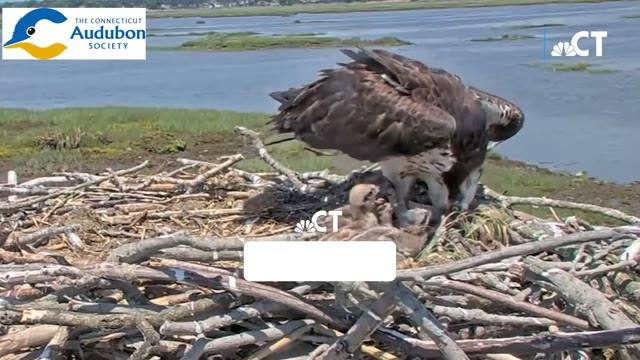
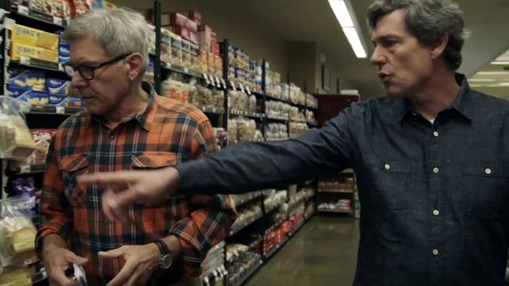
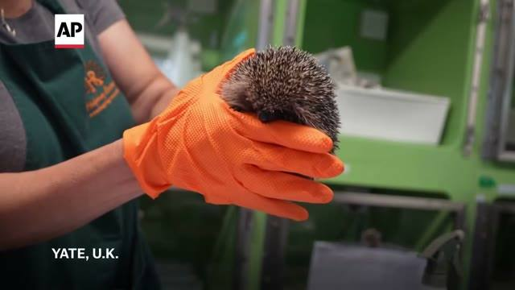
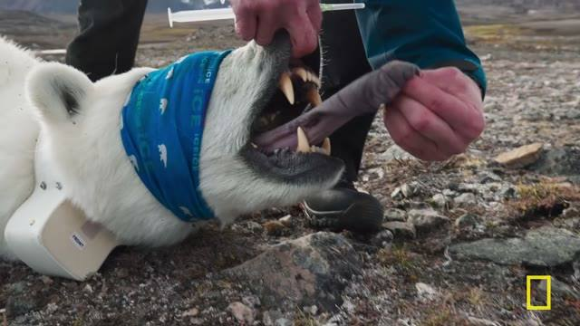

CAclimate_archives 9:01 pm
Connecticut ospreys are disappearing. Starving chicks point to vanishing baitfish — likely caused by warmer waters.

1.1K views
Continuity Throughline
Throughline publishes three short videos a day on your channels, on your topics, in your voice.
Connecticut ospreys are disappearing. Starving chicks point to vanishing baitfish — likely caused by warmer waters.

Scientists dart polar bears to attach tracking collars and assess their level of health and nutrition — measuring their adaptation to climate change.

Harrison Ford: Palm oil's in nearly everything on the shelf — and demand is growing faster than any other crop.

The 2005 report flagged competition over fresh water and food as warming displaces people.
Climate denying Fox host apparently didn't realize Adam McKay's 'Don't Look Up' was a parable satirizing media coverage of climate change.
Hoglets are arriving at UK rescues undersized this year — mothers can't dig baked, drought-hardened soil to find the worms and grubs they need.

A real day on @climate_archives: three new posts, three reruns.
Your best ideas live in decks, talks and inboxes. Your feed goes quiet between announcements. And posting every day is a job nobody on the team has time for.
Silence reads as stagnation, to customers, funders and hires alike.
What continuity marketing means
Continuity marketing is a steady, daily presence built around the ideas your organization stands for. Instead of going loud for a launch and quiet for a month, you show up every day with something worth watching about the field you care about.
People should be able to tell we're alive and moving.
Daily posts show an organization that is paying attention to its field.
We want followers who become customers, donors and partners.
Consistent, topic-focused posting attracts people who care about what you do, and every post's link brings them to you.
We have a point of view; we just don't have time to publish it.
Throughline turns your perspective into daily commentary on what's happening in your field.
Campaigns spike and stop. Continuity compounds.
How it works
Formats, not just archives

"Scientists dart polar bears to attach tracking collars and assess their level of health and nutrition — measuring their adaptation to climate change."
"Harrison Ford: Palm oil's in nearly everything on the shelf — and demand is growing faster than any other crop. The real cost: forests cleared for plantations."
"Connecticut ospreys are disappearing. Starving chicks point to vanishing baitfish — likely caused by warmer waters."
Your own long-form work goes through the same process: webinars, podcasts and keynotes become short videos, each with a link to the full recording.
See it running
Throughline runs @climate_archives for Renewables.org: found footage about climate, posted every day, each post linking back to Renewables.org.
About one post a day, written and posted by hand.
Three new posts a day plus reruns of proven ones: about six a day.
Views per month on Threads
Scientists dart polar bears to attach tracking collars and assess their level of health and nutrition.
Rerun · 412K views, six weeks after the original's 1.17MMusk says the Sabatier process — pulling CO2 from air, combining it with water to make methane and oxygen — is also how Starship would fuel up on Mars.
Rerun · 124K viewsProtests erupt in Indonesia, where toxic haze has lingered for months, and displaced orangutans now fill rehabilitation centers.
From Al Jazeera · 45K viewsFigures from the account's own analytics, as of November 18, 2026.
Pricing
Continuity Throughline
$1,000 / month
Three new posts every day.
Month to month. You own your accounts.
Once your library is big enough, Throughline brings back proven posts alongside the new ones. Audiences turn over, and a post that worked in September usually works again in October. So the longer you run, the more you publish, at the same price.
| Posts published | Roughly when | Each day |
|---|---|---|
| 0–59 | First 3 weeks | 3 new |
| 60 | About day 20 | 3 new + 1 rerun |
| 120 | About day 40 | 3 new + 2 reruns |
| 180 | About day 60 | 3 new + 3 reruns |
By month three: about 180 posts a month, about $5 a post.
FAQ
You decide. Our editors check every post before it goes out. If you want the final say, turn on approvals and nothing publishes until you approve it in your dashboard.
Yes. You get your own sign-in to see the queue, edit captions and reject anything that isn't you. Each rejection teaches Throughline what to avoid next time.
Threads, Instagram Reels, LinkedIn, X and Facebook. Each post goes out on every connected account, formatted for each.
Short excerpts from published documentaries, talks, interviews and news, posted with commentary, a credit to the original and a link to the full video. If a rights holder asks us to take a post down, we take it down. Your own footage stays yours.
Your rules come first: topics to avoid, tone to keep, lines never to cross. If something happens that changes what's appropriate, tell us and we hold the queue until you're ready.
Yes. It's month to month, and you own your accounts and everything posted to them.
One conversation about your mission, audience, voice and topics, then connecting your accounts. Your first posts arrive for review within about two weeks.
Live in about two weeks. Cancel anytime.